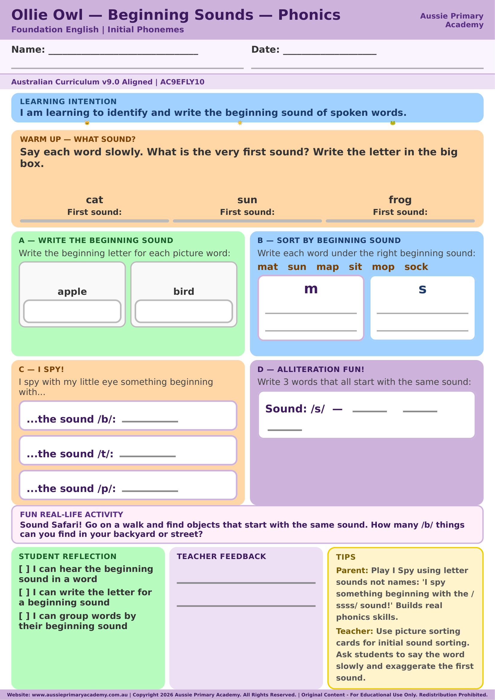

Foundation · Phonics · Free Printable
Beginning Sounds
Identify the beginning sound in common words.
Worksheet Preview

Learning Intention
Students identify the beginning sound in familiar words and connect the sound they hear with the word they are saying.
Australian Curriculum
Supports Foundation phonics learning under AC9EFLY10, with a focus on listening for and identifying sounds at the beginning of spoken words.
Teacher Notes
Say each word slowly and clearly. Ask students to listen for the first sound before they choose an answer. If needed, stretch the word and repeat the first phoneme.
Skills Practised
- Beginning sound identification
- Listening and oral language
- Phonemic awareness
- Sound-to-word matching
Why Beginning Sounds Matter
Hearing the first sound in a word is an important early phonics skill. It helps children pay attention to the sounds in spoken words and prepares them to connect sounds with letters as their reading and spelling develop.
Quick Facts
- Year level: Foundation
- Area: Phonics
- Curriculum code: AC9EFLY10
- Format: Free printable PDF
Best Used For
Use this resource for explicit phonics instruction, small-group practice, literacy rotations, early-finisher work or short home practice. It can also be used as a quick check of whether a child can hear the initial sound in familiar words.
Before You Start
Practise saying a few familiar words aloud and ask, “What sound can you hear first?” Keep the focus on the sound rather than the letter name. If a child is unsure, model the word slowly and try again.
About This Worksheet
This Foundation phonics worksheet gives children focused practice hearing and identifying the first sound in familiar words. It is designed for early literacy practice at school, during small-group instruction or at home.
I Can Checklist
- I can listen for the first sound in a word.
- I can match a beginning sound to a familiar word.
- I can say the sound clearly.
How to Use It
Say each picture word aloud and ask the child to stretch the word if needed. Encourage them to focus on the first phoneme rather than the letter name. After completing the page, review any sounds that were difficult.
Parent Tip
Make beginning-sound practice part of everyday routines. Try finding objects around the home that start with the same sound, such as sun, sock and spoon.